|
 |
| ЭФЛЕЙРА® (EFLEIRA) netakimab раствор д/п/к введения | ||||||||||||||||||
|
Клинико-фармакологическая группа: Ингибитор интерлейкина Номер и дата регистрации: ЛП-005439 от 04.04.19 Код ATX: L04AC |
Владелец регистрационного удостоверения: зарегистрировано и произведено Представительство: | |||||||||||||||||
Форма выпуска, состав и упаковка Раствор для п/к введения от бесцветного до светло-желтого или светло-желтого с коричневатым оттенком цвета, прозрачный или слегка опалесцирующий.
Вспомогательные вещества: натрия ацетата тригидрат - 1.74 мг, трегалозы дигидрат - 80 мг, полоксамер 188 - 0.5 мг, уксусная кислота ледяная - до pH 5.0, вода д/и - до 1 мл. 1 мл - шприцы трехкомпонентные (1) - упаковки ячейковые контурные (2) в комплекте с салфетками спиртовыми (2 шт.) - пачки картонные. | ||||||||||||||||||
| ||||||||||||||||||
Описание препарата основано на официально утвержденной инструкции по применению и утверждено компанией-производителем для издания 2022 г. | ||||||||||||||||||
Фармакологическое действие |
Фармакокинетика |
Показания |
Режим дозирования |
Побочное действие |
Противопоказания |
Беременность и лактация |
Особые указания |
Передозировка |
Лекарственное взаимодействие |
Условия хранения и сроки годности |
Условия реализации
Фармакологическое действие
Нетакимаб является рекомбинантным гуманизированным моноклональным антителом, в терапевтических концентрациях специфически связывающим интерлейкин-17А (ИЛ-17А), находящийся непосредственно в тканях или в крови и других биологических жидкостях. ИЛ-17А – провоспалительный цитокин, гиперпродукция которого преимущественно обусловлена активацией Th17-лимфоцитов. В рамках врожденного иммунитета ИЛ-17А выполняет защитную роль. При хронических иммуновоспалительных заболеваниях патологическая активация Th17-лимфоцитов и гиперпродукция ИЛ-17 стимулирует Т-клеточный ответ и усиленную продукцию других медиаторов воспаления: ИЛ-1, ИЛ-6, ФНОα, факторов роста (Г-КСФ, ГМ-КСФ) и различных хемокинов. Нетакимаб обладает высокой термодинамической константой специфического связывания с ИЛ-17А человека. По данным доклинических исследований специфическое связывание нетакимаба в нормальных тканях человека ограничено тканями легкого, тимуса, лимфатического узла, миндалин, что согласуется с данными об экспрессии ИЛ-17 клетками этих тканей. Применение нетакимаба не сопровождается статистически значимым изменением уровня Т-лимфоцитов и не влияет на уровень и соотношение иммуноглобулинов классов А, G и М. Специфическая противовоспалительная активность нетакимаба продемонстрирована в тестах in vitro и in vivo. Нетакимаб дозозависимо ингибирует ИЛ-17 и ФНОα-зависимую продукцию ИЛ-6 на культуре клеток при IC50 40 pM. На модели коллаген-индуцированного артрита у яванских макак (Macaca fascicularis) многократное (1 раз в неделю в течение 4 недель) п/к введение нетакимаба сопровождается снижением выраженности воспалительной реакции в суставах, что подтверждено при гистологическом исследовании (суставной хрящ остается интактным, синовиальные оболочки - без признаков поражения и воспалительной реакции, пролиферации синовиоцитов не отмечено). У больных псориазом использование нетакимаба сопровождается угасанием явлений воспаления и гиперкератоза в коже, достоверным снижением уровня С-реактивного белка и СОЭ. У пациентов с активным анкилозирующим спондилитом и псориатическим артритом на фоне применения нетакимаба отмечается уменьшение симптомов воспаления в позвоночнике, энтезисах и суставах, а также быстрое снижение концентрации С-реактивного белка, являющегося маркером воспаления. Фармакокинетика
Всасывание/распределение Изменение концентрации нетакимаба после п/к введения препарата является дозозависимым (значения Сmax, Cmax-mult, AUC0-t находятся в прямой зависимости от дозы). Препарат характеризуется медленной фазой абсорбции с постепенным линейным нарастанием концентрации в сыворотке крови. При однократном п/к введении нетакимаба в дозе 120 мг пациентам с бляшечным псориазом препарат начинал обнаруживаться в сыворотке крови в течение 0.5-4 ч после введения; Сmax составляла 15.1 (7.7-19.3) мкг/мл, Тmax – 144 (72-168) ч, AUC0-168 – 1667.8 (932.2–2270.8) (мкг/мл)×ч. При повторных введениях отмечено накопление препарата в сыворотке крови с ростом концентрации в 1.8-3.6 раза. Максимальная концентрация при многократном введении (Cmax-mult) составляла 33.0 (23.1-44.0) мкг/мл и достигалась (Tmax-mult) через 1680 (672-2016) ч. Выведение Характеристики выведения нетакимаба являются типичными для препаратов на основе моноклональных антител: показатели Kel, T1/2, MRT, Cl не зависят от дозы вводимого препарата. Т1/2 после однократного введения составляет около 16 суток. Средний клиренс нетакимаба при однократном введении в дозе 120 мг пациентам с бляшечным псориазом составил 1.8 л/сут. Фармакокинетические параметры нетакимаба у пациентов с анкилозирующим спондилитом схожи с таковыми у пациентов с бляшечным псориазом. Фармакокинетика в особых клинических случаях Фармакокинетические параметры нетакимаба у пациентов с анкилозирующим спондилитом схожи с таковыми у пациентов с бляшечным псориазом. Пациенты с почечной и печеночной недостаточностью: фармакокинетические данные у больных с почечной и печеночной недостаточностью отсутствуют. Пациенты в возрасте старше 65 лет: фармакокинетические данные у лиц в возрасте старше 65 лет отсутствуют. Показания
Режим дозирования
Применение препарата Эфлейра® должно осуществляться под наблюдением врачей, имеющих опыт лечения заболеваний, при которых показан препарат Эфлейра®. После соответствующего обучения возможно самостоятельное введение препарата пациентом при условии динамического наблюдения со стороны лечащего врача. Препарат Эфлейра® можно применять как в стационарных, так и в амбулаторных условиях. Препарат вводят в дозе 120 мг в виде двух п/к инъекций по 1 мл препарата с концентрацией 60 мг/мл. Лечение бляшечного псориаза среднетяжелой и тяжелой степени у взрослых пациентов, когда показана системная терапия или фототерапия Рекомендуемая доза - 120 мг в виде двух подкожных инъекций по 1 мл (60 мг) препарата, каждая вводится 1 раз в неделю на неделях 0, 1 и 2, затем 1 раз каждые 4 недели. Лечение активного анкилозирующего спондилита при недостаточном ответе на стандартную терапию Рекомендуемая доза - 120 мг в виде двух подкожных инъекций по 1 мл (60 мг) препарата каждая. Препарат вводится 1 раз в неделю на неделях 0, 1 и 2, затем каждые 2 недели. Лечение активного псориатического артрита в режиме монотерапии или в комбинации с метотрексатом при недостаточном ответе на стандартную терапию Рекомендуемая доза - 120 мг в виде двух подкожных инъекций по 1 мл (60 мг) препарата каждая. Препарат вводится 1 раз в неделю на неделях 0, 1 и 2, затем каждые 2 недели до недели 10 включительно. Далее с недели 14 препарат вводится в дозе 120 мг в виде двух подкожных инъекций по 1 мл (60 мг) каждая 1 раз в 4 недели.
При пропуске очередного введения по любой причине инъекция препарата Эфлейра® должна быть произведена как можно быстрее. Дата следующего введения рассчитывается исходя из продолжительности задержки с введением препарата: если со времени пропуска введения прошло не более 3 дней, следующую инъекцию препарата необходимо выполнить по текущему графику, если с момента пропуска дозы прошло более 3 дней, то новый отсчет для даты следующего введения начинают с момента фактически проведенной инъекции препарата Эфлейра®. Указания по применению Подготовка к проведению п/к инъекции Тщательно вымыть руки. Достать упаковку с двумя шприцами/автоинжекторами с препаратом Эфлейра® из холодильника, затем извлечь из картонной пачки и ячейковой упаковки два шприца/автоинжектора и положить на чистую поверхность. Убедиться, что срок хранения препарата, указанный на картонной пачке и шприце/автоинжекторе не истек. Препарат Эфлейра® в преднаполненном шприце 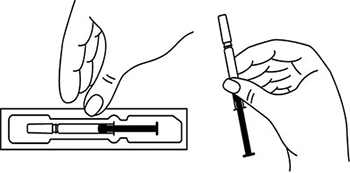 Препарат Эфлейра® в автоинжекторе 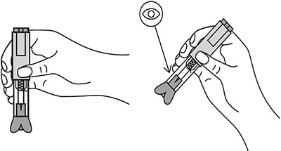 Осмотреть шприцы/автоинжекторы, а также лекарственный препарат, находящийся в них. Препарат Эфлейра® представляет собой прозрачный, от бесцветного до светло-желтого цвета раствор. Нельзя использовать препарат в случае:
Перед введением шприцы/автоинжекторы с препаратом Эфлейра® следует довести до комнатной температуры, для этого необходимо оставить шприц при комнатной температуре в течение приблизительно 25-30 мин. Не следует согревать шприц/автоинжектор каким-либо другим способом. Подготовить салфетку/ватный тампон, спиртовой раствор. На данном этапе не следует снимать колпачок шприца/автоинжектора. Техника выполнения п/к инъекции препарата Эфлейра® в преднаполненном шприце Выбор и подготовка места для инъекции Выбрать место инъекции (передняя брюшная стенка (отступая не менее 5 см от пупка), передняя и боковая поверхность бедра или средняя треть наружной части плеча (возможные места для инъекций закрашены на рисунке ниже)). 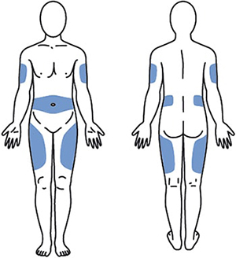 Места инъекций и стороны следует менять при каждой последующей инъекции. Расстояние между двумя введениями должно составлять как минимум 5 см. Нельзя вводить препарат в место на коже, где имеется болезненность, покраснение, уплотнение или кровоподтек (эти признаки могут указывать на наличие инфекции). По возможности не следует вводить препарат в псориатическую бляшку. Место для укола необходимо обработать спиртовой салфеткой/ватным тампоном круговыми движениями. Шприц не встряхивать. Снять колпачок с иглы, не дотрагиваясь до иглы и избегая ее прикосновения к другим поверхностям. 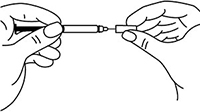 Большим и указательным пальцами одной руки взять в складку обработанную кожу. 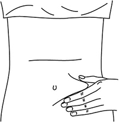 В другую руку взять шприц, держа его градуированной поверхностью вверх. Введение препарата необходимо осуществлять под углом 45 или 90 градусов к поверхности кожи в зависимости от толщины кожи и выраженности подкожно-жирового слоя (у худощавых пациентов введение препарата осуществляется под углом 45 градусов, у пациентов с толщиной кожной складки более 1.5 см допустимо введение под углом 90 градусов). 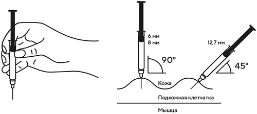 Одним быстрым движением полностью ввести иглу в кожную складку. 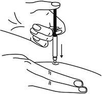 После введения иглы складку кожи следует отпустить. 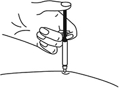 Ввести весь раствор медленным постоянным надавливанием на поршень шприца в течение 2-5 сек. 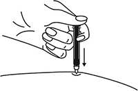 Когда шприц будет пустым, вынуть иглу из кожи под тем же углом. 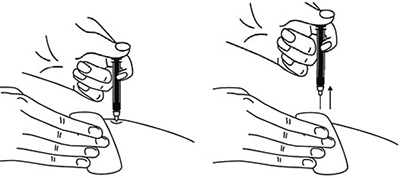 Сухой стерильной салфеткой/ватным шариком слегка прижать область инъекции, но не растирать. Из места инъекции может выделиться небольшое количество крови. При необходимости можно воспользоваться пластырем. Ввести вторую дозу препарата Эфлейра® аналогичным образом предпочтительно в ту же анатомическую область при условии, что место последующей инъекции должно быть не ближе 5 см от предыдущей. Время выполнения двух инъекций не должно превышать 10 мин. После инъекции шприц повторно не использовать. Техника выполнения п/к инъекции препарата Эфлейра® в автоинжекторе Устройство автоинжектора: 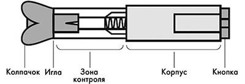 Автоинжектор не встряхивать. Не следует снимать защитный колпачок с автоинжектора до выполнения инъекции. Необходимо проверить срок годности препарата по маркировке на упаковке, оценить целостность автоинжектора и состояние раствора через зону контроля автоинжектора. Не следует использовать автоинжектор в случае его повреждения, изменения цвета и прозрачности раствора, а также при истечении срока годности. Разместить автоинжектор на чистой горизонтальной поверхности. Выбрать место введения (область брюшной стенки (отступая не менее 5 см от пупка) или передняя поверхность бедра) и обработать кожу в области введения спиртовой салфеткой. 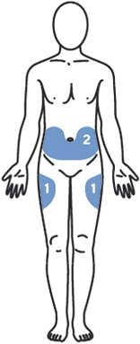 Непосредственно перед инъекцией одной рукой снять колпачок с автоинжектора, удерживая другой рукой его корпус. 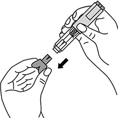 Одной рукой взять в складку обработанную спиртовой салфеткой кожу и удерживать в течение всей процедуры инъекции. В другую руку взять автоинжектор, удерживая его за корпус. Введение препарата необходимо осуществлять, плотно прижав автоинжектор под углом 90 градусов к поверхности кожи. Надавливание автоинжектором на поверхность кожной складки приведет к разблокированию кнопки. 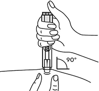 Удерживая автоинжектор под углом 90 градусов к поверхности кожной складки, надавить до упора на кнопку автоинжектора. Послышится щелчок, указывающий на начало инъекции. Не следует изменять положение автоинжектора. Необходимо удерживать кнопку в течение 10 сек до окончания инъекции. 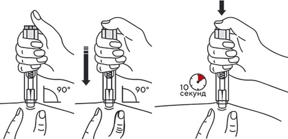 Если инъекция не запустилась, следует отпустить кнопку и проверить, плотно ли прижат автоинжектор к кожной складке. Необходимо прижать плотно автоинжектор к коже и повторить процедуру инъекции, вновь нажав на кнопку. Следует удерживать автоинжектор плотно прижатым к коже еще несколько секунд для полного введения лекарственного вещества. Осмотрев зону контроля, необходимо убедиться, что вся доза препарата введена и контейнер пуст. 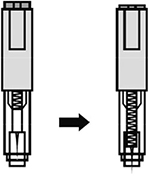 После окончания инъекции извлечь автоинжектор, игла автоматически закроется защитным цилиндром. 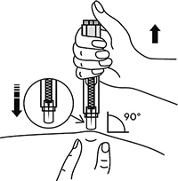 Сухой стерильной салфеткой/ватным шариком слегка прижать область инъекции, но не растирать область выполненной инъекции. Из места инъекции может выделиться небольшое количество крови. При необходимости можно воспользоваться пластырем. Ввести вторую дозу препарата Эфлейра® аналогичным образом предпочтительно в ту же анатомическую область при условии, что место последующей инъекции должно быть не ближе 5 см от предыдущей. Время выполнения двух инъекций не должно превышать 10 мин. После инъекции автоинжектор повторно не использовать. Утилизация расходного материала Неиспользованный раствор препарата, использованные шприцы/автоинжекторы, салфетки/ватные тампоны и другие расходные материалы подлежат утилизации с применением закрывающегося, устойчивого к проколам контейнера для острых предметов из пластика или стекла. Не допускать хранения использованных шприцев/автоинжекторов в местах, доступных для детей. Побочное действие
В рамках проведенных клинических исследований у пациентов с бляшечным псориазом, псориатическим артритом и анкилозирующим спондилитом препарат Эфлейра® показал благоприятный профиль безопасности. Явлений дозолимитирующей токсичности не выявлено. Большинство зарегистрированных нежелательных явлений, связанных с приемом препарата Эфлейра®, имели легкую или среднюю степень тяжести и не требовали прекращения терапии. Летальных исходов, связанных с терапией препаратом Эфлейра®, в ходе клинических исследований выявлено не было. Наиболее частой нежелательной реакцией в проведенных клинических исследованиях была нейтропения, большинство случаев которой были легкой или средней степени тяжести, носили транзиторный характер и не требовали дополнительной терапии. В данной инструкции нежелательные реакции представлены в соответствии с MedDRA. Ниже приведен перечень нежелательных реакций, зарегистрированных у пациентов, получавших нетакимаб в рамках клинических исследований и имеющих определенную, вероятную или возможную связь с приемом препарата. Частота указана с учетом следующих критериев: очень часто (≥1/10), часто (от ≥1/100 до <1/10), нечасто (от ≥1/1000 до <1/100), редко (от ≥1/10000 до <1/1000), очень редко (≤10000). Инфекции и инвазии: часто – инфекции верхних дыхательных путей; нечасто – инфекция дыхательных путей, пневмония, назофарингит, фарингит, синусит, инфекция мочевыводящих путей, кандидоз пищевода, конъюнктивит вирусный, простой герпес, стафилококковое импетиго, фурункул, туберкулезная инфекция. Со стороны печени и желчевыводящих путей: часто - гипербилирубинемия. Со стороны ЖКТ: нечасто - боль в животе, диарея. Со стороны кожи и подкожной клетчатки: нечасто – экзема, дерматит, сыпь, зуд, крапивница. Со стороны крови и лимфатической системы: часто - нейтропения, лейкопения, лимфоцитоз; нечасто – тромбоцитопения, лимфопения. Со стороны иммунной системы: нечасто - гиперчувствительность. Со стороны органа зрения: нечасто – эписклерит. Со стороны нервной системы: нечасто - головная боль, головокружение, парестезия, поражение лицевого нерва. Со стороны сердца: нечасто - синусовая брадикардия, блокада левой ножки пучка Гиса. Со стороны сосудов: нечасто - гипертензия (в т.ч. изолированная систолическая/диастолическая гипертензия), гипертонический криз. Общие нарушения и реакции в месте введения: нечасто - гриппоподобное заболевание*, местная реакция** Со стороны метаболизма и питания: нечасто – гипергликемия. Со стороны почек и мочевыводящих путей: нечасто - протеинурия. Лабораторные и инструментальные данные: часто – повышение активности АЛТ, АСТ, положительный результат исследования на комплекс Mycobacterium tuberculosis; нечасто – повышение ГГТ, повышение уровня холестерина в крови, увеличение массы тела. Травмы, интоксикации и осложнения процедур: нечасто – головокружение во время процедуры (во время инъекции). Доброкачественные, злокачественные и неуточненные новообразования (включая кисты и полипы): нечасто – инфицированный невус. Со стороны репродуктивной системы и молочных желез: нечасто – фиброзно-кистозная болезнь молочных желез. * Гриппоподобное заболевание характеризуется появлением ряда симптомов, сходных с выявляемыми при гриппе или простуде, включая, например, но не ограничиваясь: повышение температуры тела, озноб, ломоту в теле, недомогание, слабость, снижение аппетита, сухой кашель, которые имеют временную связь с проведением инъекции препарата. ** Местные реакции могут включать любые неблагоприятные проявления, возникающие в мете инъекции. Противопоказания
С осторожностью Следует соблюдать осторожность при назначении препарата пациентам с хроническими и рецидивирующими инфекциями или с указаниями на них в анамнезе, в периоде ранней реконвалесценции после тяжелых и среднетяжелых инфекционных заболеваний, а также после недавно проведенной вакцинации живыми вакцинами. В связи с ограниченными данными клинических исследований о применении нетакимаба у пациентов в возрасте старше 65 лет следует соблюдать осторожность при назначении препарата пациентам указанной возрастной группы. В связи с отсутствием сведений о применении нетакимаба у больных воспалительными заболеваниями кишечника следует избегать его назначения пациентам с болезнью Крона или язвенным колитом. Применение при беременности и кормлении грудью
Беременность При применении нетакимаба у животных не выявлено отрицательного влияния на репродуктивную функцию, эмбриотоксичности или тератогенных эффектов. Исследований влияния на плод у беременных женщин не проводилось. Препарат противопоказан к применению во время беременности. Грудное вскармливание Нет данных о выделении нетакимаба с грудным молоком. Учитывая, что иммуноглобулины класса G, к которым относится нетакимаб, при циркуляции в крови матери могут выделяться с грудным молоком, применение в период грудного вскармливания противопоказано. Во избежание негативного воздействия на ребенка следует прекратить либо грудное вскармливание, либо терапию, учитывая соотношение риска и пользы для матери и ребенка. Фертильность В исследованиях у животных не обнаружено негативного воздействия нетакимаба на фертильность. Данные о влиянии препарата на фертильность у человека отсутствуют. Особые указания
Наличие таких потенциально тяжелых инфекций, как ВИЧ, активный гепатит В и/или С, сифилис, туберкулез, относится к противопоказаниям для назначения нетакимаба. Применение нетакимаба у данной группы пациентов не изучено. Учитывая иммуносупрессивное действие нетакимаба, терапия этим препаратом потенциально может приводить к обострению хронических инфекций и повышению риска первичного инфицирования. Необходимо проводить скрининг и оценивать соотношение риска и пользы терапии нетакимабом у этих пациентов. Пациентам с активным туберкулезом терапия препаратом Эфлейра® противопоказана. Перед назначением препарата Эфлейра® и в ходе терапии необходимо проводить стандартный скрининг на туберкулез. Пациентам с латентным туберкулезом рекомендуется пройти стандартный курс противотуберкулезной терапии перед началом терапии препаратом Эфлейра®. При реактивации гепатита В лечение нетакимабом следует прекратить и назначить соответствующую противовирусную терапию. Женщины детородного возраста и их половые партнеры должны использовать эффективные средства контрацепции в период проведения терапии. При применении нетакимаба потенциально возможно развитие реакции гиперчувствительности. В рамках проведенных клинических исследований нетакимаба анафилактические реакции не зарегистрированы, нечасто отмечались реакции гиперчувствительности и крапивница. Однако при применении других ингибиторов ИЛ-17 крапивница и анафилактические реакции отмечались в редких и очень редких случаях. При возникновении анафилактических или других серьезных аллергических реакций применение препарата Эфлейра® следует немедленно прекратить и начать соответствующую симптоматическую терапию. Наличие алкогольной или наркотической зависимости, а также психических расстройств может стать причиной несоблюдения пациентом графика лечения нетакимабом, что, в свою очередь, может привести к снижению эффективности терапии. Необходим более тщательный мониторинг за пациентами с указанными состояниями в связи с отсутствием результатов клинических исследований на данной категории пациентов и возможностью повышенного риска развития гепатотоксичности и других неблагоприятных последствий. Иммуногенность В ходе клинических исследований препарата Эфлейра® при лечении псориаза, псориатического артрита и анкилозирующего спондилита формирование связывающих антител к нетакимабу было зарегистрировано менее чем в 0.5% случаев. Нейтрализующих антител выявлено не было. Полученные данные демонстрируют низкую иммуногенность нетакимаба у пациентов с псориазом, псориатическим артритом и пациентов с анкилозирующим спондилитом. Пациенты в возрасте старше 65 лет Данные об эффективности и безопасности препарата у пациентов в возрасте старше 65 лет ограничены. Не предполагается наличия существенных возрастных различий в распределении и выведении препарата. Пациенты с нарушениями функции почек и печени Эффективность и безопасность препарата у данной категории пациентов не изучались. Использование в педиатрии Исследование эффективности и безопасности препарата у детей и подростков в возрасте до 18 лет не проводилось. Вакцинация Не следует проводить иммунизацию живыми вакцинами в ходе лечения препаратом Эфлейра®, т.к. клиническая оценка безопасности данного взаимодействия в рамках клинических исследований не проводилась. Вакцинация живыми вакцинами до начала терапии препаратом Эфлейра®, а также интервал между вакцинацией и началом терапии должны соответствовать действующим клиническим рекомендациям. Иммунизацию инактивированными вакцинами во время терапии нетакимабом необходимо выполнять с осторожностью. Влияние на способность к управлению транспортными средствами и механизмами Отсутствуют данные о влиянии препарата Эфлейра® на способность управлять транспортными средствами и работать с машинами и/или механизмами. Передозировка
Клинические данные о передозировке отсутствуют. Максимальная переносимая доза для человека не установлена. В клинических исследованиях явлений дозолимитирующей токсичности не зарегистрировано: при п/к введении препарата нетакимаб в максимальной дозе 3 мг/кг (195–355 мг для взрослого человека с массой тела 65–85 кг) патологических отклонений не было выявлено. Лечение: специфический антидот отсутствует; проводят симптоматическую терапию. Лекарственное взаимодействие
Сведений о наличии неблагоприятного лекарственного взаимодействия нетакимаба с другими лекарственными препаратами до настоящего времени не получено. Предполагается, что нетакимаб может усиливать иммуносупрессивное действие ГКС, метотрексата, сульфасалазина, лефлуномида и других базисных противовоспалительных препаратов. Смешивание препарата с другими лекарственными средствами и введение в виде инфузии строго запрещено. |
||||||||||||||||||
Вернуться наверх |
||||||||||||||||||
Copyright © Справочник Видаль «Лекарственные препараты в России», Москва, Россия